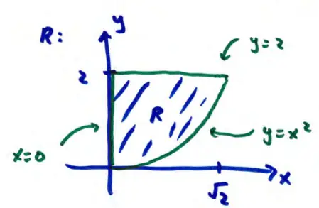

16.2 Double Integrals over General Regions
last time: over rectangular regions \( R = \{ (x,y) : a \leq x \leq b, \ c \leq y \leq d \} \)
the order of integration doesn't matter
\[ \int_{a}^{b} \int_{c}^{d} f(x,y) \, dy \, dx = \int_{c}^{d} \int_{a}^{b} f(x,y) \, dx \, dy \]
but switching order arbitrarily is only ok for rectangular regions for general regions, order is very crucial
example
\( f(x,y) = xy^2 \)
\( R = \{ (x,y) : 0 \leq x \leq \sqrt{2}, \ x^2 \leq y \leq 2 \} \)
- top curve: \( y = 2 \)
- bottom curve: \( y = x^2 \)

Basic rule: integrate the constant-bounded variable LAST (outside)